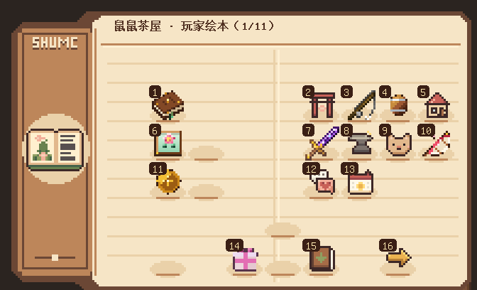
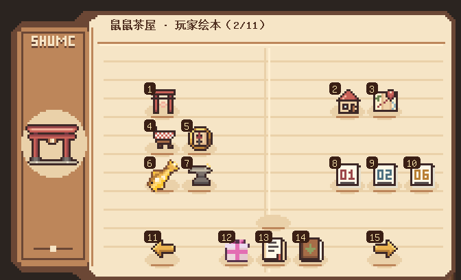
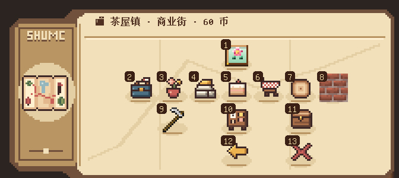
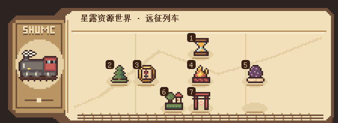

主城与新手引导
樱溪茶屋镇：出生点、四个方向有什么、商业街五大专柜、新手绘本与资源世界
樱溪茶屋镇
主城「樱溪茶屋镇」坐落在永久不重置的樱花山谷主世界中央。主世界以主城为中心有 1000×1000 的世界边界（半径 500 格）。输入 /spawn（别名 /主城、/huicheng）随时回到中央广场，站位朝向正南的商业大街。

城里不能随便拆建
主城和环城规划区（中心周围约 ±116 格）的广场、大道、桥梁和地标受保护。你只能在自己租下（或搭子、好友授权）的庄园和商铺里建造。走出东南西北任意城门，外面的樱花山谷完全放开自由建造。
四个方向有什么
| 方位 | 主要地标 | 相关指令 |
|---|---|---|
| 中央广场 | 开阔石砖广场、报时钟塔、迎宾喷泉；北侧是委托板与箱子商店名录区 | /order /cshop |
 正南 · 商业大街 正南 · 商业大街 | 13 格宽石砖大道。前段是团子杂货铺、柚子家具馆、桃桃花房、麻薯烘焙等旗舰店；后段两侧是 01–08 号 15×15 双层玩家旺铺 | /shop /npcshop /playershop |
| 正北 · 高架车站 | 出货柜台、资源远征厅（热气球与星空远征门）、萌宠园；穿过去是北苑庄园和神樱神社 | /sell /ziyuan /pet |
 西区 · 工匠与茶屋 西区 · 工匠与茶屋 | 鼠鼠茶屋工坊、主城奇观、星露锻造坊、樱花露天温泉与许愿池、冒险公会 | /brew /wonder /forge /pool /adventure |
| 东区 · 樱溪东岸 | 过中央石桥就是鱼王博物馆、社区献祭星碑与职业公会、东岸亲水木栈道、晶洞 / 渔具 / 占卜小铺 | /fish museum /bundle /job /geode |
 环城大道 环城大道 | 7 格宽林荫大道连着 12 块 31×31 庄园：北苑 H01–H03、南苑 H04–H06、西苑 H07–H10、东苑 H11–H12；四门外是通往自由区的田园土路 | /dipi |
想钓鱼时输入 /spawn fish，会直接传送到樱溪东岸栈道、面朝溪水。
新手绘本 /guide
/guide（别名 /新手、/xinshou、/tutorial）打开 11 页图文绘本。封面有 10 个章节目录，每页右侧都有按钮能直接打开对应玩法。
- 🎁 新手见面礼：30 茶屋币 + 面包 ×8 + 樱花树苗 ×2，每人限领一次。30 币刚好够租一块环城庄园。
- 📖 领实体手册：《鼠鼠茶屋 · 玩家完全手册》，能放背包随身翻，可以重复领。
- 封面上的「第一天怎么玩」：① 领礼 → ②
/dipi租庄园 → ③/ziyuan去资源世界采集。




商业街专柜
/npcshop（别名 /商铺、/专柜）打开商业街导览：左键直接打开某家店的商店，右键传送到那家店门口。也可以直接 /npcshop tackle|florist|blacksmith|bakery|furniture 打开某一家。
| 店铺 | 店主 | 卖什么 |
|---|---|---|
 老渔夫渔具行 老渔夫渔具行 tackle | 姜太公 | 四种诱饵（樱花花瓣、发光浆果、甜浆果、生鳕鱼）、钓鱼竿、樱花木船、航海指南针 |
四季花店农庄 florist | 桃桃 | 樱花树苗、翠竹、小麦种子、胡萝卜、骨粉、蜂箱、花盆 |
矿石与锻造补给 blacksmith | 小锤 | 煤炭、铁锭、金锭、紫水晶碎片、成品星露精铁锭 / 红莲淬火石、铁砧、锻造台 |
 茶屋甜品烘焙坊 茶屋甜品烘焙坊 bakery | 麻薯 | 面包、草莓奶油蛋糕、南瓜派、曲奇、蜂蜜瓶、招牌松饼与奶昔 |
 柚子木作馆 柚子木作馆 furniture | 柚子 | 能右键互动的 3D 茶屋家具（茶具、盆栽、台灯、风铃、坐垫等） |
 团子杂货铺 团子杂货铺 | — | /shop：茶屋神器、补给礼盒、装饰家具，见 经济页 |


主城 NPC 一览
主城里站着 20 位可以点的 NPC，左键或右键点一下就会打开对应的菜单，和输入指令效果一样。找不到人时直接输指令也行。
| NPC | 在哪 | 点一下打开 |
|---|---|---|
| 📋 委托板管理员 · 栗子 | 中央广场北侧 | 委托板 · NPC 收购与玩家悬赏 /order |
| 🏪 商会掌柜 · 铃铛 | 中央广场北侧 | 全服箱子商店名录 /cshop |
| 🔮 占卜师 · 星见 | 东岸栈道 | 今日运势签 /fortune |
| 🛍 杂货店主 · 团子 | 商业大街西侧 | 茶屋杂货铺 /shop |
| 🪑 家具匠人 · 柚子 | 商业大街西侧 | 柚子木作馆 /npcshop furniture |
| 🌸 花店老板 · 桃桃 | 商业大街东侧 | 四季花店农庄 /npcshop florist |
| 🍰 甜品烘焙师 · 麻薯 | 商业大街东侧 | 茶屋甜品烘焙坊 /npcshop bakery |
| 🐾 萌宠管理员 · 奶糖 | 北侧萌宠园 | 萌宠乐园 /pet |
| 📦 出货站长 · 仓鼠 | 北侧高架站厅 | 一键出货 /sell |
| 🍵 茶屋老板娘 · 可可 | 西大道 · 鼠鼠茶屋 | 茶屋工坊 /brew |
| 🏯 主城建筑师 · 墨白 | 西大道 · 奇观工地 | 主城奇观共建 /wonder |
| 🔨 矮人铁匠 · 巴尔 | 西南工匠区 | 星露锻造坊 /forge |
| 💍 饰品工匠 · 琥珀 | 西南工匠区 | 饰品匣 /accessory |
| 🪨 矿石商人 · 小锤 | 西南工匠区 | 矿石与锻造补给 /npcshop blacksmith |
| ⛲ 锦鲤仙子 | 西南温泉旁 | 锦鲤许愿池 /pool |
| ⚔ 公会教官 · 苍岚 | 西南 · 冒险公会 | 冒险公会 /adventure |
| 🏛 祝尼魔使者 | 东南滨水 | 社区献祭 /bundle |
| 🎓 职业导师 · 青禾 | 东南滨水 | 生活专精 /job |
| 💎 晶洞鉴宝师 · 紫苏 | 东岸栈道 | 晶洞鉴宝台 /geode |
| 🎣 老渔夫 · 姜太公 | 东岸栈道 | 老渔夫渔具行 /npcshop tackle |
位置按主城中心（出生点）来说：北 = 出生点背后，南 = 正前方的商业大街。
资源世界
主世界永久保留、不重置，所以大规模挖矿、砍树、刷怪请去资源世界。/ziyuan（别名 /资源、/zy）打开远征列车面板：
- 🌲 资源世界驿站：和主世界一样的地形，3000×3000 范围，随便砍随便挖。
- 🧭 随机野外
/rtp：空降到资源世界随机的安全野外，每次传送后冷却 15 秒。 - 🔥 下界前哨站 / 🐉 末地前哨站：挖下界合金、打末影龙、找鞘翅。
每 7 天整个重建
资源世界、下界、末地每周重置一次，里面的东西会消失；和主世界一样都是死亡不掉落。千万别在里面盖家，面板上能看到距下次重置还有多久。


鱼王博物馆与主城奇观
/fish museum 传送到东北的茶屋鱼王博物馆，32 座实体展柜展示全服各鱼种的最大纪录，3 期展厅每 45 秒自动轮换，也可以 /fish museum next / prev / 1–3 手动切换。每天第一次传送过去参观，还能领 25 茶屋币 + 15 经验的打卡礼。
主城西侧的樱花露天温泉和锦鲤玻璃水族馆需要全服一起捐建材修好，竣工后主城保护区内会多出永久光环，见 社交页 · 主城奇观。